Holidays & Traditions
47 no-prep Holidays & Traditions resources with answer keys: reading comprehension, reading trails, and more – filter by grade.
47 resources
Grade

Lunar New Year Reading Comprehension Passages | Winter Scavenger Hunt 5-6

Irish Halloween Reading Comprehension Passages | History Scavenger Hunt 3-4

The Cozy Winter Room Reading Comprehension | Winter Scavenger Hunt 3-4

Lantern Night Reading Comprehension Passages | Autumn Scavenger Hunt 3-4

Spring Holidays Reading Comprehension BUNDLE | Easter, Passover & Eid

Halloween Worksheets Bundle | Grades 5-8 | Spooky Legends Reading Comprehension

Thanksgiving Worksheets Bundle | Grades 5-8 | Harvest Reading Comprehension

Christmas Reading Comprehension Passages BUNDLE | Cloze & Word Search

FREE Fall Reading Comprehension Passages – Halloween, Autumn & Harvest | Cloze

Holidays Around the World Reading Comprehension BUNDLE | Fall & Winter

Fiaba – Italian Reading: Cloze Text, Listening Task & Word Search (Scheda)
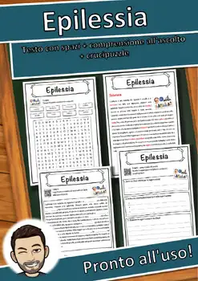
Epilessia – Italian Reading: Cloze Text, Listening Task & Word Search (Scheda)
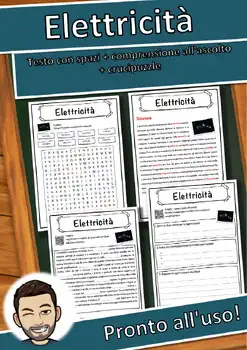
Elettricità – Italian Reading: Cloze Text, Listening Task & Word Search (Scheda)
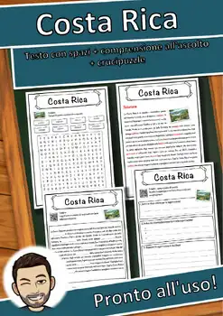
Costa Rica – Italian Reading: Cloze Text, Listening Task & Word Search (Scheda)
Christkind – Italian Reading: Cloze Text, Listening Task & Word Search (Scheda)
Capodanno – Italian Reading: Cloze Text, Listening Task & Word Search (Scheda)
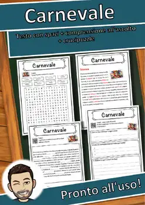
Carnevale – Italian Reading: Cloze Text, Listening Task & Word Search (Scheda)
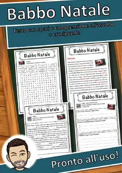
Babbo Natale – Italian Reading: Cloze, Listening & Word Search
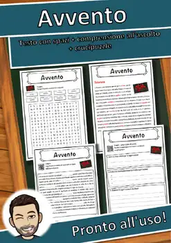
Avvento – Italian Reading: Cloze Text, Listening Task & Word Search (Scheda)
Wedding – Reading Comprehension: Cloze Text, Listening Task & Word Search
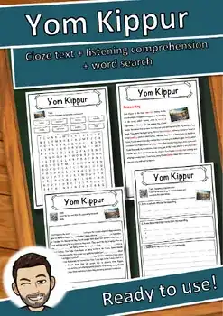
Yom Kippur – Reading Comprehension: Cloze Text, Listening Task & Word Search
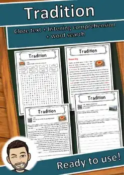
Tradition – Reading Comprehension: Cloze Text, Listening Task & Word Search
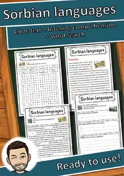
Sorbian languages – Reading Comprehension: Cloze, Listening & Word Search
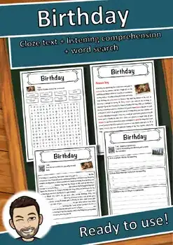
Birthday – Reading Comprehension: Cloze Text, Listening Task & Word Search
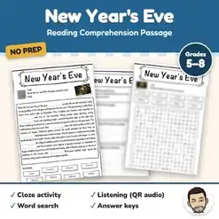
New Year's Eve Reading Comprehension Passage | New Year Activity Grades 5-8
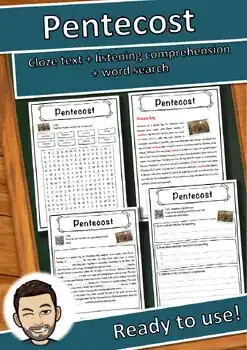
Pentecost – Reading Comprehension: Cloze Text, Listening Task & Word Search
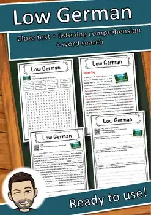
Low German – Reading Comprehension: Cloze Text, Listening Task & Word Search
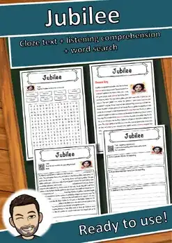
Jubilee – Reading Comprehension: Cloze Text, Listening Task & Word Search
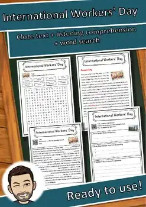
International Workers' Day – Reading Worksheet: Cloze, Listening & Word Search
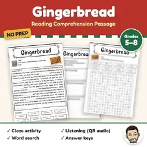
Gingerbread Reading Comprehension Passage | Christmas Word Search Grades 5-8
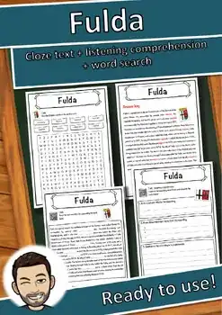
Fulda – Reading Comprehension: Cloze Text, Listening Task & Word Search
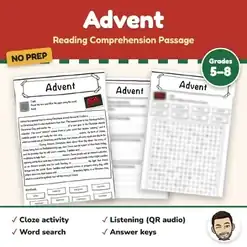
Advent Reading Comprehension Passage | Christmas Word Search Grades 5-8
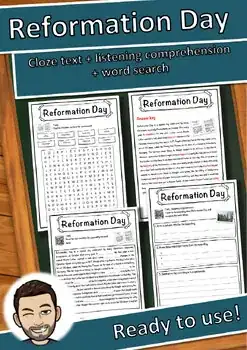
Reformation Day – Reading Comprehension: Cloze, Listening & Word Search
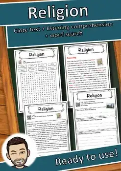
Religion – Reading Comprehension: Cloze Text, Listening Task & Word Search
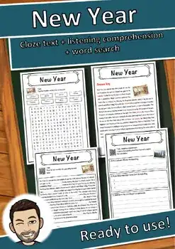
New Year – Reading Comprehension: Cloze Text, Listening Task & Word Search

Halloween – Reading Comprehension: Cloze Text, Listening Task & Word Search
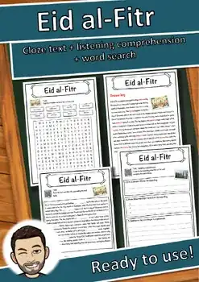
Eid al-Fitr – Reading Comprehension: Cloze Text, Listening Task & Word Search
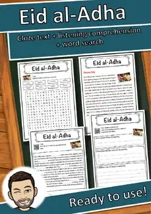
Eid al-Adha – Reading Comprehension: Cloze Text, Listening Task & Word Search
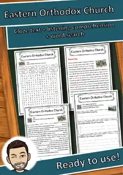
Eastern Orthodox Church – Reading Comprehension: Cloze, Listening & Word Search
Easter – Reading Comprehension: Cloze Text, Listening Task & Word Search
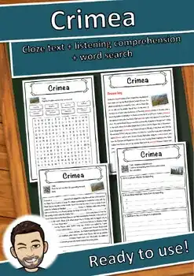
Crimea – Reading Comprehension: Cloze Text, Listening Task & Word Search
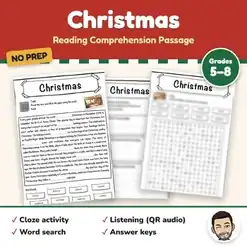
Christmas Reading Comprehension Passage & Questions | Word Search Grades 5-8
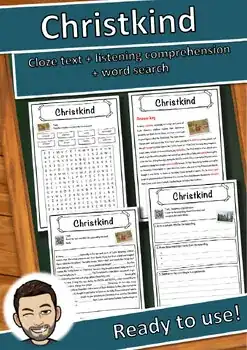
Christkind – Reading Comprehension: Cloze Text, Listening Task & Word Search
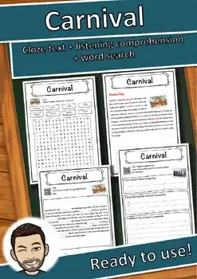
Carnival – Reading Comprehension: Cloze Text, Listening Task & Word Search
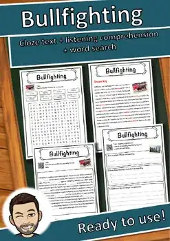
Bullfighting – Reading Comprehension: Cloze Text, Listening Task & Word Search
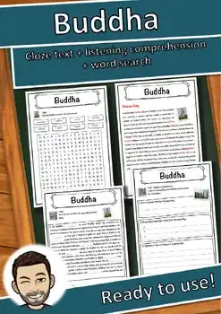
Buddha – Reading Comprehension: Cloze Text, Listening Task & Word Search
Adamo ed Eva
Adamo ed Eva – Italian Reading: Cloze, Listening & Word Search
No resources found – try a different search term or filter.